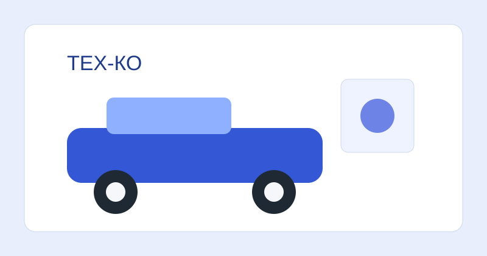
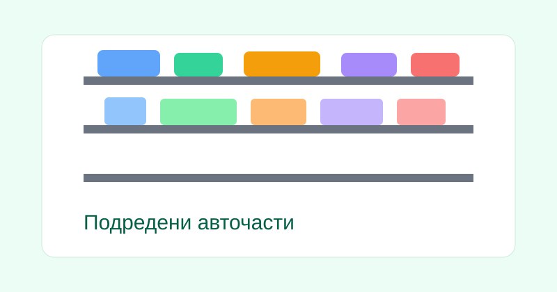

Основни авточасти
Филтри, накладки, дискове, ремъци, масла и други важни компоненти за редовна поддръжка и сигурност на пътя.
Вашият надежден магазин за авточасти, консумативи и аксесоари. Предлагаме внимателно подбрани продукти за популярни марки и модели, за да поддържате автомобила си в отлично състояние.

ТЕХ-КО е специализиран магазин за авточасти, насочен към шофьори, които търсят качество, коректно обслужване и достъпни цени. Нашата цел е всеки клиент да получи ясна консултация и правилната част за своя автомобил.
Филтри, накладки, дискове, ремъци, масла и други важни компоненти за редовна поддръжка и сигурност на пътя.
Чистачки, крушки, добавки, течности и полезни аксесоари за ежедневен комфорт и по-добра видимост.
Помагаме при проверка на съвместимост, за да получите точната част според модела и годината на автомобила.
